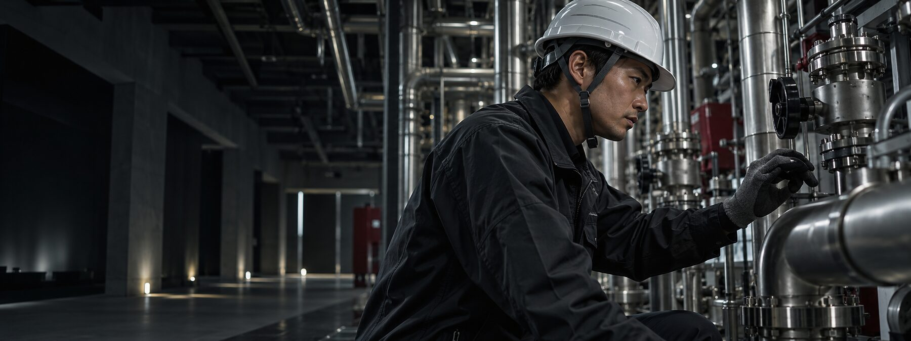

都市型オフィスビル新築工事
空調・給排水・電気設備

BUILDING EQUIPMENT
FOR A BETTER TOMORROW
私たちは、空調・給排水・電気設備の設計施工からメンテナンスまで、建物のライフサイクルを一貫して支えます。目には見えない場所まで、誠実に、美しく。
設備は、建物の中で目立たない存在です。だからこそ、私たちは見えない部分にこだわり、確かな技術で、安心と快適をつくり続けます。
私たちについて →さまざまな建物の設備工事に携わってきました。
空調・給排水・電気設備
空調・電気設備
空調・給排水設備
定期点検から緊急対応まで、建物の安心を支え続けます。
専門スタッフが設備を総合的に診断。
建物ごとの最適な保全計画を立案。
安全に作業し、結果を明確にご報告。
トラブル対応まで長期的に支援。
設備工事・改修・保守点検のお問い合わせはこちらから。